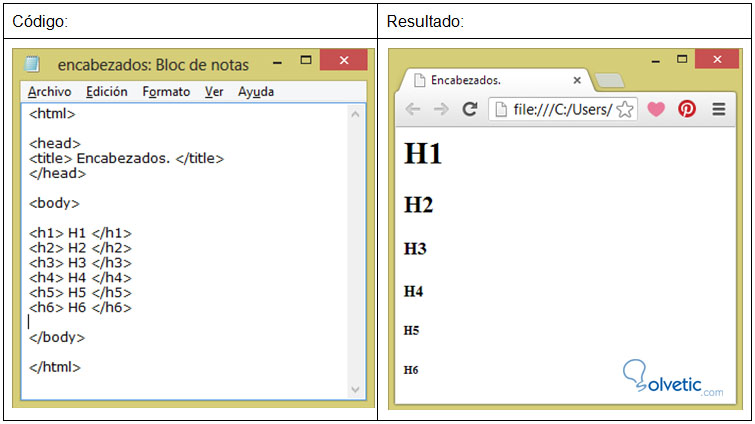
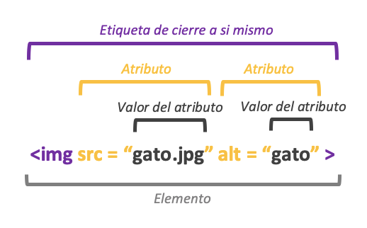

Etiquetas Basicas
Para hablar de las etiquetas basicas de HTML es necesario primero saber que es en si el lenguaje HTML.
Primero sus siglas traducen Lenguaje de Marcado de HiperTexto.
Dicho esto, podemos tambien mensionar que como usuarios de lo que llamamos internet
nos encontramos con difernetes paginas web que a la vista parecieran unicas, pero que todas comparten
algo en comun y es el lenguaje con el que fueron creadas, lenguaje que hace que cada parte, cada letra o cada imagen
este y se vea como la vemos pero para que esto se vea asi se hace uso de etiquetas cada una con una funcion
aqui mencionaremos almenos como el titulo lo indica las basicas de este leguaje:
- "body": para el contenido
- "head": para la informacion sobre el documento
- "div": division dentro del contenido
- "a":para enlaces
- "strong": para poner en negrita
- "br": para saltos en linea
- "h1"-"h6": para los titulos dentro del documento
- "img": para añadir imagenes
- "ol":para listas ordenadas "ul": para listas desordenadas "li": para elemnetos dentro de las listas
- "p": para parrafos
- "span": paar estilos en una parte del texto 
Atributos y valores
Un atributo Html es un valor o propiedad que se añade a una etiqueta html, la cual otorga una propiedad o comportamiento
especifico a la propia etiqueta por lo cual se hace necesario conocerlas.
para añadir los atributos es suficiete con colocarlo dentro de la misma etiqueta.
tipos de atributos
- atributos requeridos : son atributos necesarios para la etiqueta html, sin ellos la etiqueta no funcionara como se espera
- aytributos opcionales: estos se utilizan cuando queremos cambiar el comportamioento que trae por defecto la etiqueta
- atributos globales : son los atributos que se pueden usar en casi cualquier etiqueta segun se requiera

refrencias
Prescott, P. (2015). HTML 5. Babelcube Inc..
Victor S.(2021). Atributos HTML Caronte..